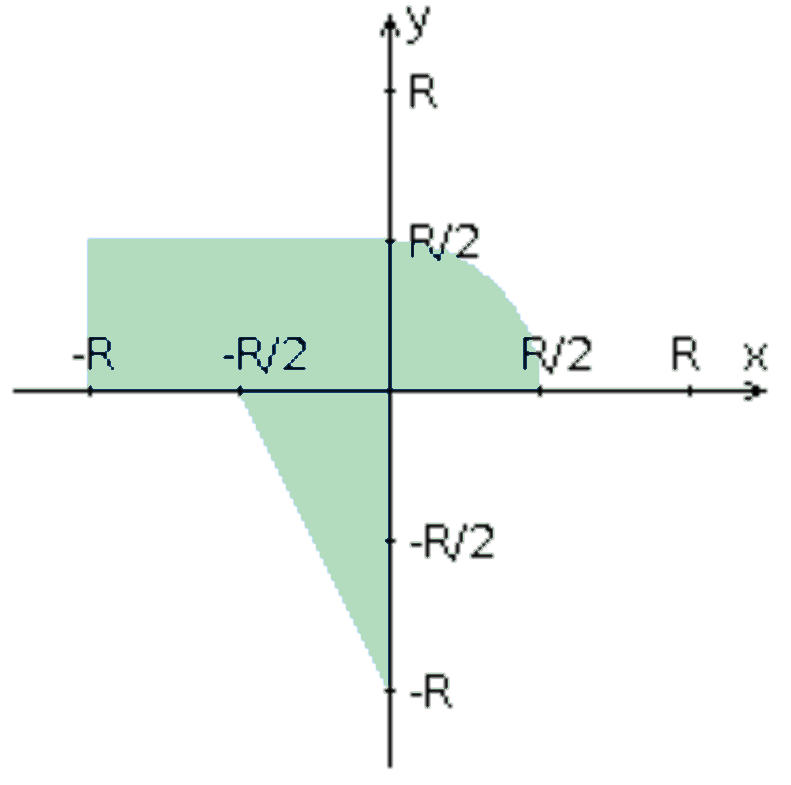

Разработать FastCGI сервер на языке Java, определяющий попадание точки
на координатной плоскости в заданную область, и создать HTML-страницу,
которая формирует данные для отправки их на обработку этому серверу.
Параметр R и координаты точки должны передаваться серверу посредством
HTTP-запроса. Сервер должен выполнять валидацию данных и возвращать
HTML-страницу с таблицей, содержащей полученные параметры и результат
вычислений - факт попадания или непопадания точки в область (допускается
в ответе сервера возвращать json строку, вместо html-страницы).
Предыдущие результаты должны сохраняться между запросами и отображаться
в таблице.
Кроме того, ответ должен содержать данные о текущем времени и времени
работы скрипта.
Комментарии по выполнению ЛР:
- Требуется поднять Apache
httpd веб-сервер от лица своего пользователя на гелиосе (шаблон файла
конфигурации доступен для скачивания наверху страницы)
- Веб-сервер должен
заниматься обслуживанием статического контента (html, css, js) и
перенаправлять запросы за динамическим контентом к FastCGI серверу
- FastCGI сервер требуется реализовать на языке Java (полезная библиотека
в помощь в виде jar архива доступна для скачивания наверху страницы) и
поднять также на гелиосе
- Путем обращений из JavaScript к FastCGI серверу
требуется показать понимание принципа AJAX
Разработанная HTML-страница должна удовлетворять следующим
требованиям:
- Для расположения текстовых и графических элементов необходимо
использовать блочную верстку.
- Данные формы должны передаваться на
обработку посредством POST-запроса.
- Таблицы стилей должны располагаться
в самом веб-документе.
- При работе с CSS должно быть продемонстрировано
использование селекторов потомств, селекторов классов, селекторов
атрибутов, селекторов псевдоклассов а также такие свойства стилей CSS,
как наследование и каскадирование.
- HTML-страница должна иметь "шапку",
содержащую ФИО студента, номер группы и новер варианта. При оформлении
шапки необходимо явным образом задать шрифт (serif), его цвет и размер в
каскадной таблице стилей.
- Отступы элементов ввода должны задаваться в
процентах.
- Страница должна содержать сценарий на языке JavaScript,
осуществляющий валидацию значений, вводимых пользователем в поля формы.
Любые некорректные значения (например, буквы в координатах точки или
отрицательный радиус) должны блокироваться.
